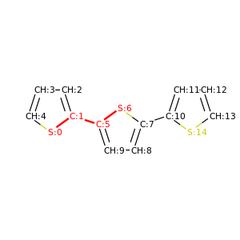
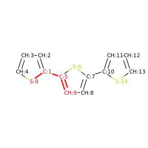
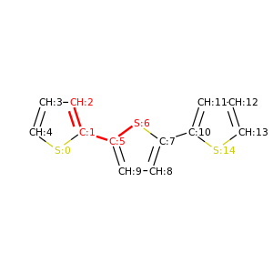
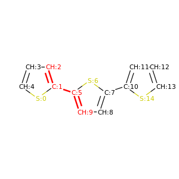
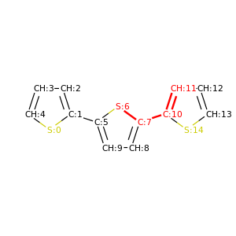
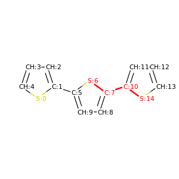
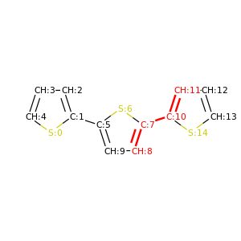
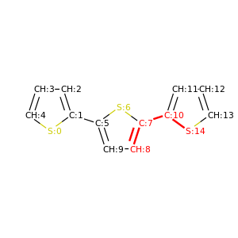

Automatic torsional angle detection for planar polymers
PySoftK has a module (pysoftk.torsional.torsional) to automatically detect the atoms involved in torsional angles in planar polymers. Firstly, the corresponding modules from PySoftK and RDKit are imported as shown in the following snipet:
from pysoftk.torsional.torsional import *
from rdkit import Chem
from rdkit.Chem import AllChem
As an example, a thiol-based linear polymer (called molecules) is employed to demonstrate the use of the module pysoftk.torsional.torsional.Torsional.
The corresponding way to invoke the function is shown in the snipet below:
#### Torsional angle detection for a molecule in a *.smi file ###
molecules=Chem.MolFromSmiles('s1c(ccc1)c1sc(cc1)c1cccs1')
# This list records all tuples of atoms which are involved in
# torsional angles for linear polymers.
lst_angles=Torsional(molecules).seek_angles()
Then, PySoftK function seek_angle searches for all atoms, which are participating in the formation of relevant torsional angles. The function outputs tuples with the atomic enumeration provided by RDKit. In the previous case, the output provided by the function is:
(.venv) $ [(0, 1, 5, 6), (0, 1, 5, 9), (2, 1, 5, 6), (2, 1, 5, 9),
(6, 7, 10, 11), (6, 7, 10, 14), (8, 7, 10, 11), (8, 7, 10, 14)]
which is printing a list of tuples of all combinations of atoms found to belong to one torsional angle labeled by an atomic index. These indices can be provided to any RDKit function (using the same initial declared molecule) to obtain other relevant quantities of these atoms.
PySoftK is able to produce figures indicating the position of the involved atoms in the detected torsional angle within the molecular complex. The module pysoftk.torsional.torsional.Torsional accepts as an argument the RDKit provided molecule, whilst the function plot_trs_ang receives an user-provided name which will be used to name the corresponding plots. The following lines of code indicates the use of this function:
# This for loop iterates over all the previous cases
# and creates pictures of the molecule and highlights
# the atoms of every detected torsional angle
Torsional(molecules).plot_trs_ang("mol_1")
The corresponding figures are displayed below, where the user can corrborate the atoms index with the one provided by the function PySoftK function seek_angle.
|  |  |
|  |  |
|  |  |
|  |  |